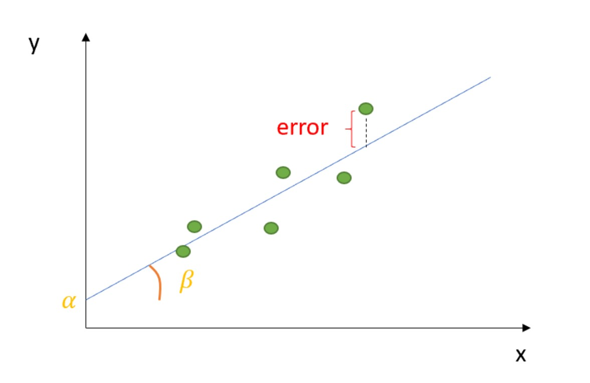
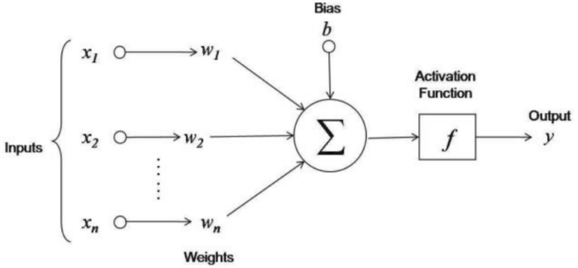
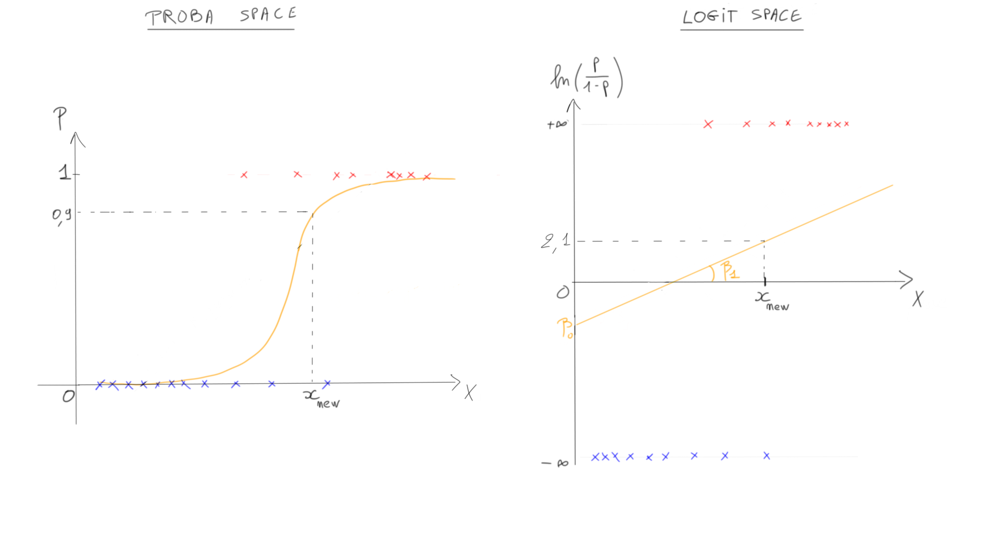

The 3 + 1 pillars of data science
My student’s question…
A few weeks ago, one of my students posed a compelling question:
“Ahmed, what are the three core things I need to learn to become a data scientist?”
My initial response was that if I could distill it down to just three things, perhaps I wouldn’t be here. However, upon reflection, I realized that there are indeed fundamental aspects to focus on.
1-Derivatives
Understanding derivatives both mathematically and conceptually serves as the bedrock of knowledge, unveiling the intricate relationships between variables. Derivatives, in essence, capture our way of perceiving the world. Whether we’re dealing with linear regression, logistic regression, or neural networks, derivatives are at the core. They signify the rate of change—a fundamental concept in data science.
In the realm of linear regression, we witness derivatives in action when determining the coefficients of the linear equation that best fits the data. In simple linear regression, the coefficient \(\beta\) signifies the change in the dependent variable \(y\) for a one-unit change in the independent variable \(x\).

For multiple linear regression with multiple independent variables, we delve into the realm of partial derivatives, each \(\beta\) portraying the change in the dependent variable while holding all others constant.
As soon as we take one step further with logistic regression, things become a bit more challenging. In the log-odds space, interpretations can still be linear, but if we aim to work with probabilities, we must acknowledge the non-linear nature of this space, characterized by the infamous sigmoid function. In this context, we rely on marginal effects to calculate the partial effects of each regressor on the probabilistic space. To be more precise, we can employ the method of finite differences (for further details, please refer to my previous blog post on the topic).
In neuronal networks is again all about derivatives. In the end Neuronal Networks are nothing more than multiple linear regressions stacked together with some fancy non-linear modification.

2-Probability & Uncertainty
Probability & Uncertainty play a fundamental role in decision-making. All my students get shocked when they understand the relation between the two.

Probability is a measure of the likelihood or chance of an event occurring. It is a numerical value between 0 (indicating impossibility) and 1 (indicating certainty).
Uncertainty refers to a lack of certainty or the state of not knowing the outcome of a particular event or situation. It arises when there are multiple possible outcomes, and we may not have complete information to predict which outcome will occur.
Now, probability is used to quantify uncertainty. When we assign probabilities to different outcomes or events, we are essentially expressing our uncertainty about which of those outcomes will occur. Higher probabilities indicate a higher degree of certainty or confidence, while lower probabilities represent greater uncertainty.
If we take these definitions further, we can say that a probability encapsulate what we do not know about reality. In essence, probabilities and probability theory allows us to navigate the inherent uncertainties and variability in the world by providing a rigorous framework for expressing, quantifying, and reasoning about what we do not know. It is a powerful tool for making informed decisions, conducting scientific investigations, and understanding complex systems, all while acknowledging the limits of our knowledge about reality.
3-Deployment
Let’s say you’ve received a promising dataset from a client, and you’re determined to develop an outstanding machine learning model that could save them $300K per month. You have access to an enormous amount of data, and you’ve invested days in crafting an exceptionally efficient system. Everything appears to be going smoothly, and you’re ready for deployment. However, a sudden realization strikes you—some of the key variables you used to train your model are not accessible in the production environment!

While this may sound trivial, it’s a mistake that many beginners fall into. They often concentrate intensely on the available data without considering how the model must perform in the real world. Yet, this oversight is a common and potentially severe pitfall in machine learning deployment. In fact, when a variable used in the training data is either unavailable or missing in the production environment, the entire system can face a catastrophic failure.
Understanding the business use of a machine learning model in production is paramount to its success and effectiveness. Beyond just building a technically sound model, grasping how it aligns with the overarching business goals and requirements is essential.
The question was about three things but I feel the need of adding at least another one.
4-Spaces
In the context of machine learning and data analysis, “spaces” typically refer to various types of mathematical or conceptual spaces that are fundamental for comprehending and solving problems. These spaces establish a framework for representing and analyzing data, features, parameters, and relationships.
The term “space” is ubiquitous throughout this field. You will often encounter terms such as Input Space, Output Space, Feature Space, Parameter Space, Embedding Space, Latent Space, and many more.
In this discussion, I’d like to take a step back and emphasize the utility of “transitioning from one space to another” in the realm of Machine Learning.
For instance, in the context of classic logistic regression, the log-odds space provides a linear interpretation of the effect of a variable \(x\) on a binary outcome \(y\). In neural networks, every time we apply a non-linear transformation using an activation function, we shift the output of our neuron from one space to another. This dynamic transition enables us to unearth new features and uncover fresh insights within our data.

In summary, within the domain of machine learning and data analysis, the concept of “spaces” offers diverse perspectives and methodologies for representing and comprehending the underlying patterns and relationships within the data.